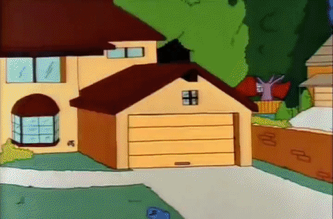
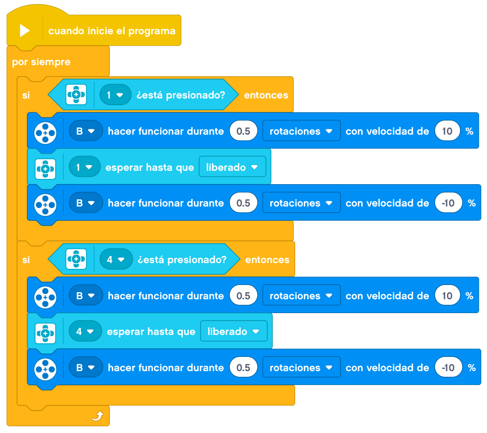
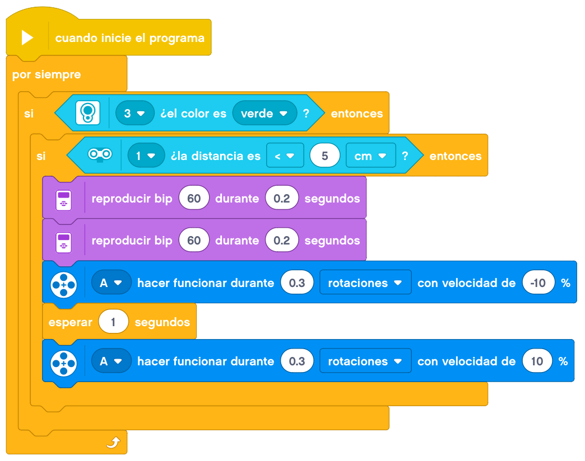
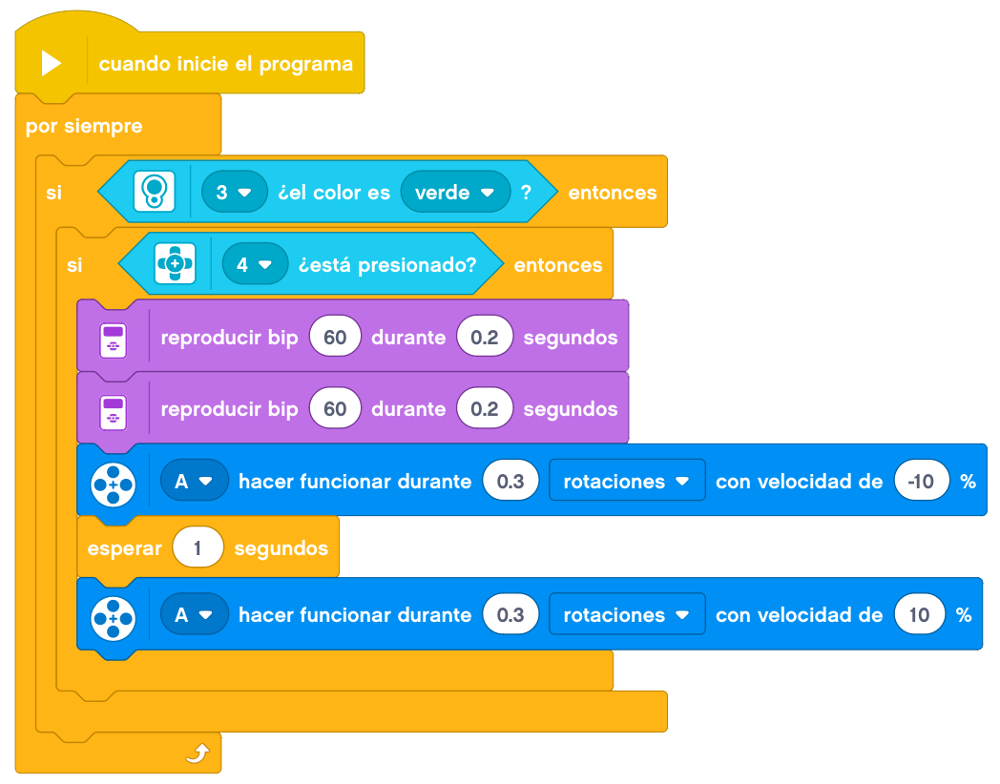

Hoy toca construir una puerta de garaje.

Crearemos una puerta de garaje a la que pondremos diferentes sensores para poder abrirla.
Necesitaremos montar un par de botones, uno para abrirla desde fuera y otro para abrirla desde dentro. La
puerta no se abrirá después de pulsar el botón, sino que este botón activará algún mecanismo que hará que se
abra la puerta a través de otro sensor.
Además, a la hora de abrirla desde fuera, también será necesario activar cualquier otro sensor para poder
abrir la puerta. En nuestro caso, hemos puesto el sensor ultrasónico para que solo funcione cuando detecte el
coche delante de la puerta.
Sin embargo, para poder abrir desde dentro, solamente con pulsar el botón serría suficiente.
El mecanismo que hemos implementado nosotros para abrir la puerta es que los botones lo que hacen es mover una
pieza de color delante del sensor de color y eso hace que se pueda abrir la puerta.
A continuación, mostraremos un ejemplo de construcción de una puerta de garaje.
Le añadimos el cableado y tendríamos la puerta de garaje terminada.
En este caso la programación se complica un poco. Podría ser de esta forma.
Programaríamos que en el caso de pulsar cualquiera de los dos botones, se activara el motor que pone delante
del sensor de color la parte verde.

En el caso del boton de fuera, programaríamos lo siguiente.

Y en el de dentro esto otro.

Nuestro proyecto terminado funcionaría de la siguiente forma.